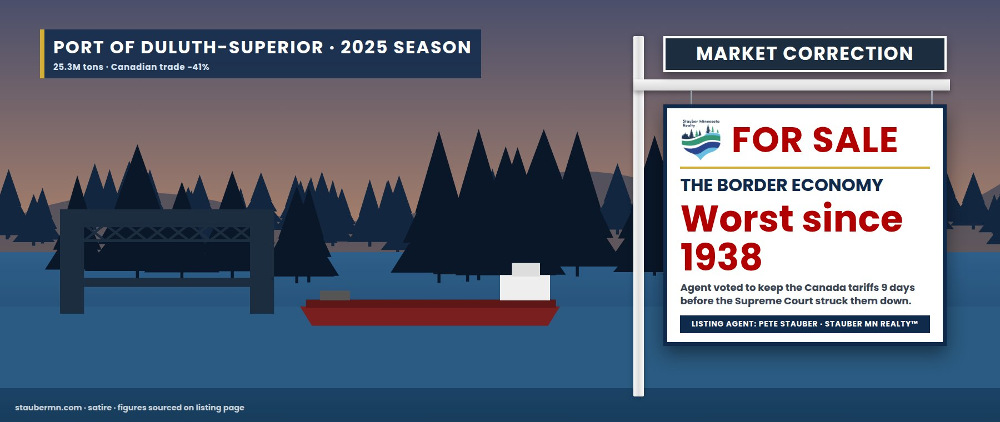

The Border Economy Fixer-Upper — Port, Pits, Paper Mills and the Canadian Trade
Port of Duluth-Superior · the Iron Range · International Falls · Grand Portage · MN-08
Waterfront property with a tariff view
This listing is the 8th District’s front porch: the Port of Duluth-Superior, the ore docks, the border crossings at International Falls and Grand Portage, and the trade with our largest customer next door. It is currently being offered as-is.
In February 2025, the President declared a national emergency and imposed tariffs on Canada. Canada answered with retaliation and its residents answered with their wallets. By the end of the 2025 shipping season, the port had moved 25.3 million tons — its lowest since 1938, down 14.6%. Trade with Canada through the port fell 41%. Grain hit its lowest level since 1890. Minnesota’s exports fell 13% in a year when U.S. exports rose 6%.
Congress had chances to end it. On February 10, 2026, Agent Stauber voted for a House rule the Clerk records as failing 214–217 (Roll Call 60); the next day he voted against H.J.Res. 72, the resolution to end the Canada tariff emergency, which passed 219–211 with six Republicans (Roll Call 65).
Nine days later, the Supreme Court ruled 6–3 that the tariffs were illegal — that tariffs are a “branch of the taxing power” reserved to Congress. Refunds, if they come, go to importers, not to the families who paid higher prices. At Farmfest this August, the agent said “our Canadian friends, our Mexican friends” should “pay their fair share.” The Canadian friends appear to have heard him.
How the front porch lost its value
Votes from the official House Clerk record.
| Date | Event | Details | Price |
|---|---|---|---|
| Feb 1, 2025 | Surcharge added | National emergency declared; tariffs of up to 25% follow on Canadian imports. Canada retaliates.Council on Foreign Relations | Up to 25% |
| Mar 2025 | Vacancy | Cleveland-Cliffs idles Minorca and part of Hibbing Taconite (~630 jobs), citing weak auto demand and excess pellet inventory — despite the steel tariffs that were supposed to protect the Range.Minnesota Reformer | −630 jobs |
| Jan–May 2025 | Foot traffic down | Travelers crossing at International Falls down 25%; Grand Portage down 23% (April: −38%).Duluth News Tribune | −25% |
| 2025 season | Appraisal | Port moves 25.3M short tons, −14.6%, lowest since 1938. Canadian trade −41%; iron-ore exports to Canada −2.5M tons; grain lowest since 1890; overseas trade lowest since before the Seaway (1959).Duluth Seaway Port Authority | 25.3M tons |
| Feb 1, 2026 | Vacancy | 45 more Hibbing Taconite jobs cut.Northern News Now | −45 jobs |
| Feb 10, 2026 | Rule vote | Agent votes AYE on H.Res. 1042; it fails 214–217.Roll Call 60 | Failed |
| Feb 11, 2026 | Offer to end | House passes H.J.Res. 72 to end the Canada tariff emergency, 219–211; six Republicans vote yes. Agent Stauber votes NAY.Roll Call 65 | Declined |
| Feb 20, 2026 | Title defect | Supreme Court, 6–3: the emergency-powers law does not authorize tariffs. The administration shifts to a 10% global tariff under Section 122; the Court of International Trade strikes that down in May (on appeal).Holland & Knight; Skadden | Illegal |
| Apr 13, 2026 | Appraisal | Minnesota 2025 exports: $23.5B, −13%, while U.S. exports rose 6%. A $1.7B drop in fuel exports to Canada is half the decline.MN DEED via WDIO | −$3.4B |
| Aug 4, 2026 | Agent remarks | At Farmfest: “We have to make sure that our Canadian friends, our Mexican friends pay their fair share.”Northern News Now | — |
| Sept 17, 2026 | New construction | Mesabi Metallics (Essar) fires its first blast at Nashwauk — the first new taconite mine in 50 years, 350 jobs planned. A union rep notes 600 laid-off miners are 17 months without permanent jobs.MPR News | +350 planned |
Comparable sales, 1890–2025
Items the agent would prefer you skip
Seller’s Disclosure Statement
- Did the tariffs cause the Iron Range layoffs?Cliffs cited weak automotive demand and excess inventory when it idled Minorca and part of Hibbing Taconite. What the record shows is that steel tariffs didn’t prevent the layoffs, and that iron-ore shipments to Canada through Duluth fell 2.5 million tons in the trade war.
- Who pays a tariff?The importer pays it at the border and passes it on. As Rep. Don Bacon (R-Neb.) put it: “American consumers pay the tariffs and thus it is a big tax.”
- If the tariffs were illegal, do I get a refund?Refunds of the struck-down tariffs, if paid, go to the importers of record. The Supreme Court did not set up a mechanism; the President predicted years of litigation.
- Are the tariffs gone?The emergency tariffs are. Steel, aluminum and lumber tariffs imposed under a different law (Section 232) remain, and the administration tried a 10% global tariff under Section 122 that a trade court struck down in May; that ruling is on appeal.
- Is anything being built?Yes. Mesabi Metallics’ $2.5 billion Nashwauk plant began mining in September 2026, with 350 jobs planned. We list it with pleasure. It does not refill the port.
“Open markets,” closed border
What the agent says
“We have to make sure that our markets are opened up to our trading partners in a free and fair way and that is particular Canada and Mexico.”Rep. Pete Stauber at Farmfest, Aug. 4, 2026
“We have to make sure that our Canadian friends, our Mexican friends pay their fair share.”Rep. Pete Stauber at Farmfest, Aug. 4, 2026
What the public record shows
- Voted NAY on ending the Canada tariff emergency (H.J.Res. 72, Feb. 11, 2026, Roll Call 65)
- Voted AYE on the Feb. 10 rule that failed 214–217 (Roll Call 60)
- Supreme Court struck down the tariffs 6–3 on Feb. 20, 2026
- Port of Duluth-Superior: lowest tonnage since 1938; Canadian trade −41%
- Minnesota exports −13% while U.S. exports rose 6%
Similar properties in this neighborhood


Public records cited in this listing
- House Clerk, Roll Call 65 (Feb. 11, 2026): H.J.Res. 72, 219-211; Stauber Nay
- House Clerk, Roll Call 60 (Feb. 10, 2026): H.Res. 1042, failed 214-217; Stauber Aye
- Council on Foreign Relations, “The House Votes to Rein in Trump’s Canada Tariffs”
- Holland & Knight, “Supreme Court Strikes Down IEEPA Tariffs” (Feb. 2026)
- Skadden, “US Trade Court Strikes Down Section 122 Tariffs” (May 2026)
- Duluth Seaway Port Authority, “Duluth-Superior tonnage falls amid trade headwinds” (Jan. 30, 2026)
- WDIO, “Minnesota exports decreased 13% in 2025” (Apr. 13, 2026)
- Duluth News Tribune, “Amid trade, sovereignty tensions, fewer Canadians traveling to Arrowhead”
- Axios, “Drop in Canadian travel to US costs tourism billions” (July 28, 2026)
- Minnesota Reformer, “Cleveland-Cliffs set to layoff 630 steelworkers” (Mar. 20, 2025)
- Northern News Now, “Hibbing Taconite to cut 45 jobs” (Jan. 8, 2026)
- Mesabi Tribune, “A year of taconite industry gyrations”
- MPR News, “Minnesota’s first new taconite mine in 50 years opens” (Sept. 23, 2026)
- Northern News Now, “Stauber, Swanson debate farm issues at FarmFest forum” (Aug. 4, 2026)